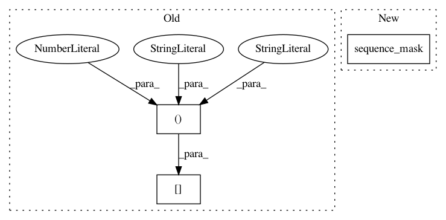

82c52dff6d625dc4c231bfacf0c4d5cd18654cca,texar/modules/encoders/transformer_encoders.py,TransformerEncoder,_build,#TransformerEncoder#Any#Any#Any#,209
Before Change
_, lengths, _ = shape_list(inputs)
inputs_padding = 1 - mask_sequences(
tf.ones_like(inputs), sequence_length, tensor_rank=3)[:, :, 0]
ignore_padding = attn.attention_bias_ignore_padding(inputs_padding)
encoder_self_attention_bias = ignore_padding
pos_embeds = self.position_embedder(lengths,
After Change
//inputs_padding = 1 - mask_sequences(
// tf.ones_like(inputs), sequence_length, tensor_rank=3)[:, :, 0]
inputs_padding = 1 - tf.sequence_mask(
sequence_length, tf.shape(inputs)[1], dtype=tf.float32)
ignore_padding = attn.attention_bias_ignore_padding(inputs_padding)
encoder_self_attention_bias = ignore_padding
pos_embeds = self.position_embedder(lengths,
In pattern: SUPERPATTERN
Frequency: 3
Non-data size: 3
Instances
Project Name: asyml/texar
Commit Name: 82c52dff6d625dc4c231bfacf0c4d5cd18654cca
Time: 2018-08-28
Author: zhitinghu@gmail.com
File Name: texar/modules/encoders/transformer_encoders.py
Class Name: TransformerEncoder
Method Name: _build
Project Name: OpenNMT/OpenNMT-py
Commit Name: 668c3ef362995c55633fde592354160fec1d1efd
Time: 2019-06-27
Author: dylan.flaute@gmail.com
File Name: onmt/decoders/transformer.py
Class Name: TransformerDecoder
Method Name: forward
Project Name: OpenNMT/OpenNMT-py
Commit Name: 668c3ef362995c55633fde592354160fec1d1efd
Time: 2019-06-27
Author: dylan.flaute@gmail.com
File Name: onmt/encoders/transformer.py
Class Name: TransformerEncoder
Method Name: forward